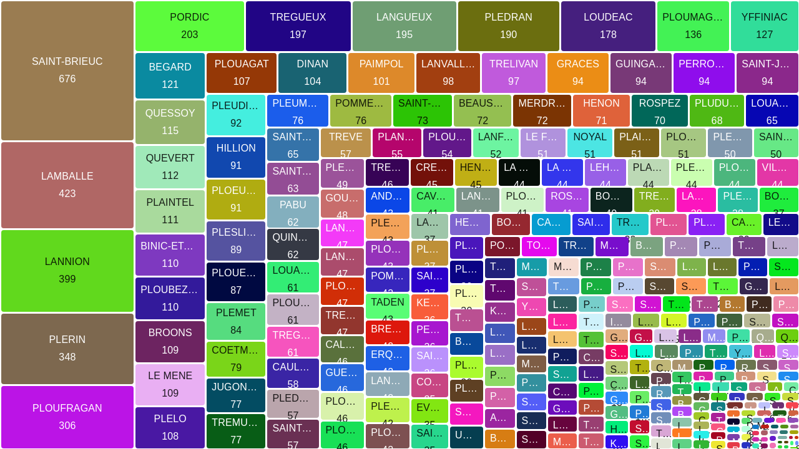

5 Séance 3
5.1 Support de la séance
5.2 Activités
5.2.1 Exercice de représentation statistique
Atelier sur les résultats de l’élection présidentielle de 2022
Les données : https://www.interieur.gouv.fr/Elections/Les-resultats/Presidentielles
L’outil de création graphique : https://www.datawrapper.de/
5.2.2 Exercice cartographie
La datavisualisation proposée par le site 
L’outil de création cartographique : https://www.datawrapper.de/